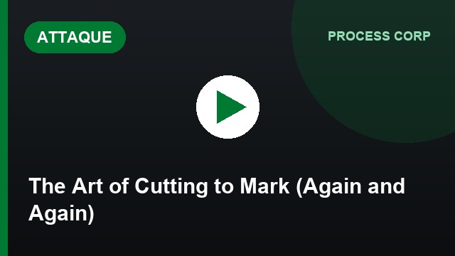
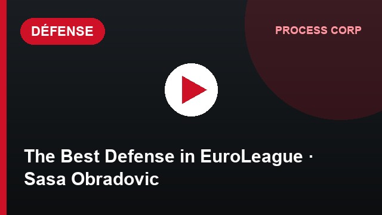
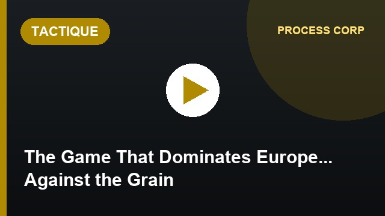
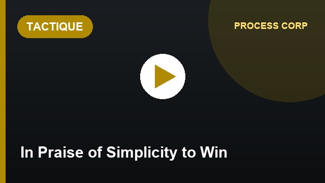

Process Corporation
Cette chaîne YouTube a attiré notre attention par son approche pragmatique et pédagogique. La DTN FECABASKET la recommande aux entraîneurs.
Cette chaîne YouTube a attiré notre attention par son approche pragmatique et pédagogique. La DTN FECABASKET la recommande aux entraîneurs.
« Plus on partage, plus on apprend, c'est ça le miracle. »
Accès immédiat aux analyses tactiques sans abonnement. Idéal pour coachs en zone rurale ou avec budget limité.
Analyses de 10-15 min qui décortiquent les systèmes pros (Paris Basket, Bleus, NBA, Euroligue). Niveau d'expertise rare.
Schémas animés clairs, vocabulaire accessible. Pensé pour faire progresser un coach, pas pour impressionner.
Sélection officielle DTN FECABASKET de vidéos Process Corporation classées en 7 catégories pédagogiques. Chaque vidéo a sa vignette YouTube cliquable.
 ▶01
▶01Analyse pédagogique complète du Spain pick & roll : déclencheurs, lectures, contre-mesures défensives.
 ▶02
▶02Une recette pédagogique en or pour les coachs camerounais : comment maximiser un effectif avec des moyens limités.
 ▶01
▶01Le shallow cut : coupe périmétrique pour échange de positions. Une arme moderne pour casser la défense.

▶02L'art de couper pour marquer. À rechercher sur la chaîne Process Corp.
 ▶03
▶03Comment Ricky Rubio maîtrise l'espace et impose son rythme. Étude tactique d'un meneur d'élite.
 ▶04
▶04Le maestro argentin Facu Campazzo décortique : timing, angles, lecture des couvertures défensives.
 ▶05
▶05Le maître brésilien de la passe : vision, anticipation, leadership du jeu placé.
 ▶06
▶06La méthode Okobo pour bâtir un 1c1 d'élite, du collège à la NBA. Étapes pédagogiques claires.
 ▶07
▶07L'outil le plus utilisé au haut niveau : écrans porteur, off-ball. Tous les détails techniques.
 ▶08
▶08La couverture « under » et comment la punir : pull-up, re-screen, slip, kick-out.
 ▶09
▶09Lectures et actions face aux défenses ICE et Weak. Stratégies modernes anti-couvertures latérales.
 ▶10
▶10Les défenseurs stuntent davantage : comment les lire et créer des avantages durables.
 ▶11
▶11Briser une défense step-up : pénétration, re-screen, kick-out 3 pts. Réponses claires.
 ▶12
▶12Que faire quand l'adversaire switche systématiquement ? Lectures du mismatch, jeu en post, ré-écran.
 ▶13
▶13Décortique l'efficacité du mid-range face à une défense compacte. Lectures clés.
 ▶01
▶01L'éclosion défensive du français de Charlotte. Lecture du jeu, impact, candidature MIP.
 ▶02
▶02Les stratégies défensives de l'Équipe de France : 22 turnovers/match, efficacité défensive 0,82.
 ▶03
▶03L'agressivité contrôlée de Detroit : 2e défense NBA, 1ère aux blocks, 2e aux interceptions.
 ▶04
▶04La défense de fer de Nanterre 92 sur le podium Betclic Elite. Étude d'un système qui marche.

▶05Étoile Rouge Belgrade meilleure défense d'EuroLeague sous Sasa Obradovic. À rechercher sur la chaîne.
 ▶06
▶06Décryptage de la finale EuroLeague gagnée par Fenerbahce 81-70 face à Monaco, défense reine.
 ▶07
▶07Décryptage de la défense step-under utilisée par le Paris Basketball. Indispensable pour coachs N1/N2.

▶01Le jeu qui domine l'Europe à contre-courant. À rechercher sur la chaîne Process Corp.

▶02Éloge de la simplicité pour gagner. À rechercher sur la chaîne Process Corp.
 ▶03
▶03Comment, sans atouts physiques exceptionnels, Brunson est devenu l'un des meilleurs joueurs du monde.
 ▶04
▶04Comment Paris a fait tomber le Real Madrid : tactique, contrôle du rythme, exploitation des erreurs.
 ▶05
▶05Analyse de l'arrivée de Vassilis Spanoulis à Monaco : jeu plus fluide, collectif renforcé.
 ▶06
▶06Le fantastique départ de saison de Cholet décrypté : 7 secrets, dont une défense d'exception.
 ▶07
▶07L'arrivée du successeur de Vincent Collet à la tête des Bleus. Vision de jeu et identité collective.
 ▶08
▶08Comment l'ASVEL renoue avec la performance grâce à un jeu épuré. Étude d'un retour gagnant.
 ▶09
▶09Pourquoi la Lettonie joue un basket esthétique. Analyse de la défaite des Bleus face à un système fluide.
 ▶10
▶10Pourquoi les sélections jeunes espagnoles trustent les finales européennes : 7 leviers identifiés.
 ▶01
▶01Le mini-documentaire sur TJ Shorts (1,75 m) qui domine l'Europe. Inspirant pour tout joueur petit.
 ▶02
▶02L'art de provoquer des fautes selon Shai Gilgeous-Alexander, MVP en devenir.
 ▶03
▶033 clés expliquant le 1er titre de champion de France du Paris Basketball, 7 ans après sa création.
 ▶04
▶04Méthode de scouting illustrée sur Canada-France à la Coupe du Monde. Outil concret pour coachs.
Le podcast de Process Corporation : interviews de coachs pros, joueurs, analystes. Une heure d'écoute = une saison d'apprentissage condensé.
🎙️ Écouter Process Pod